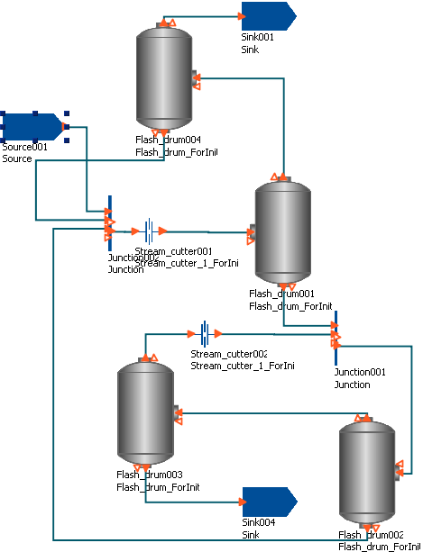

Synchronisation of the various Initialisations Procedures for non-composite Models is specified using NEXT sections, as has been described before (Specifying the sequence of Actions in Initialisations Procedures). For composite Models, the same procedures apply in addition to being able to control when a NEXT section of a sub Model is processed. This is done using the ADVANCE and COMPLETE actions. The syntax of the ADVANCE action is:
ADVANCE unitname ;
or
ADVANCE [modelname] ;
The first command causes the next unprocessed NEXT section within the Initialisation Procedure of the Unit unitname to be processed in parallel with the actions specified in the NEXT section within which it resides. unitname may also be an array of Units or a slice of an array of Units. The second command does the same, but for all Units of Model type modelname (note that the brackets are part of the syntax).
Since the ADVANCE keyword specifies that a subsequent NEXT section of a sub Model should be exectuted, and all changes specified in NEXT sections must be within a MOVE_TO or JUMP_TO section, there must be no ADVANCE commands placed inside a MOVE_TO or JUMP_TO section: doing so will result in an error.
The COMPLETE action is similar to ADVANCE but causes all of the Unit's NEXT sections to be executed in sequence (beginning with the first unexecuted NEXT section of the Unit). The syntax is:
COMPLETE unitname ;
or
COMPLETE [modelname] ;
When more than one COMPLETE action resides in the same NEXT section, then the first unprocessed NEXT section of each Unit is executed in parallel, followed by the second set of NEXT sections and so on until all explicit and implicit steps are complete.
To illustrate the ADVANCE action, suppose a composite Model contains instances of two sub-models, A and B:
UNIT A1 AS A B1 AS B ...
Now, the Models A and B may have a number of Initialisation Procedures, such as:
# in Model A INITIALISATION_PROCEDURE IP_A1 ... INITIALISATION_PROCEDURE IP_A2 DEFAULT ... |
# in Model B INITIALISATION_PROCEDURE IP_B1 ... INITIALISATION_PROCEDURE IP_B2 DEFAULT ... |
The choice of Initialisation Procedure for the sub Models is made within the USE section of the Initialisation Procedure of the composite Model:
INITIALISATION_PROCEDURE IP_composite1
USE
A1 : IP_A1 ;
B1 : IP_B1 ;
END
Now the Initialisation Procedures of the two sub models are defined as:
# in Model A
INITIALISATION_PROCEDURE IP_A1
START
P1 := P1_0 ;
END
NEXT
MOVE_TO
P1 := P1_1 ;
END
END
NEXT
JUMP_TO
P1 := P1_2 ;
END
END
END
|
# in Model B
INITIALISATIONPROCEDURE IP_B1
START
P2 := P2_0 ;
END
NEXT
MOVE_TO
P2 := P2_1 ;
END
END
END
|
Notice that Model B's Initialisation Procedure has one less NEXT section, each is defined in terms of changes to a Parameter
(P1 for Model A and P2 for Model B) and each has an implicit final step
that reverts the Parameter back to its original value.
The Initialisation Procedure for the composite model is:
INITIALISATIONPROCEDURE composite_init_1
USE
A1 : IP_A1 ;
B1 : IP_B1 ;
END
START
PP := PP_0 ;
END
# Step1
NEXT
MOVE_TO
PP := PP_1 ;
END
END
# Step2
NEXT
ADVANCE A1 ;
END
# Step3
NEXT
ADVANCE A1 ;
MOVE_TO
PP := PP_2 ;
END
END
# Step 4
NEXT
ADVANCE B1 ;
END
# Step 5
NEXT
ADVANCE A1 ;
ADVANCE B1 ;
MOVE_TO
REVERT PP ;
END
END
END
Now, during each step in the initialisation strategy of the composite Model, the following steps occur to each of the Models:
| Step | PP | A1.P1 | B1.P2 | Comments |
|---|---|---|---|---|
| START | PP_0 | P1_0 | P2_0 | The first, simplest initialisation. |
| 1 | PP_1 | P1_0 | P2_0 | The first NEXT section only changes the value of PP. |
| 2 | PP_1 | P1_1 | P2_0 | The second NEXT section advances the Initialisation Procedure for A1, which changes its value of P1 to P1_1. |
| 3 | PP_2 | P1_2 | P2_0 | The third NEXT section changes the value of PP to PP_2 and at the same time advances the Initialisation Procedure for A1, which changes the value of P1 to P1_2. |
| 4 | PP_2 | P1_2 | P2_1 | The fourth NEXT section only advances the Initialisation Procedure for B1, which changes its value of P2 to P2_1. |
| 5 | PP | P1 | P2 | The final NEXT section reverts PP to the value specified in the Process and simultaneously advances A1 and B1's Initialisation Procedures. This causes the implicit final steps to be called, which revert P1 and P2 to their values specified in the Process. |
The example above is somewhat contrived, just to illustrate the processes occurring during initialisation. A more useful application of sequence control in composite-Model initialisation is the convergence of flowsheets with recycles. The figure below illustrates a composite Model containing 4 instances of a flash-drum Model, and various other connections and splitters. Of note are the two instances of a Stream-Cutter Model. These are models that perform stream tears but using equation simplifications: the full equations link the inlet of the Model to the outlet, effectively connecting the stream; the simplified equations set the outlet to some given condition, tearing the stream.

Now the Initialisation Procedures for the Stream_Cutter and Flash_drum Models are as follows.
# in Model Stream_cutter
INITIALISATION_PROCEDURE Init
START
ConnectionEqns := Simple ;
END
NEXT
MOVE_TO
REVERT ConnectionEqns ;
END
END
END
|
# in Model Flash_drum
INITIALISATION_PROCEDURE Init
START
REPLACE
Pressure
WITH
VapourFraction := VapFracStart ;
END
END
NEXT
MOVE_TO
REVERT Pressure ;
END
END
END
|
The Selector Variable ConnectionEqns represents the connection of the stream into and out of the unit; when
Simple, the stream is torn. For the Flash_drum Model, one needs to specify the pressure, but it is difficult to
initialise the Model with this specification, so the degree of freedom specified during initialisation is the vapour fraction: it is a much easier to
determine the pressure from the vapour fraction than the reverse.
Finally, the flowsheet initialisation strategy is:
INITIALISATION_PROCEDURE Init
USE
Flash_drum003 : Init;
Flash_drum004 : Init;
Stream_cutter001 : Init;
Stream_cutter002 : Init;
END
NEXT
ADVANCE Flash_drum003;
ADVANCE Flash_drum004;
END
NEXT
ADVANCE Stream_cutter001;
ADVANCE Stream_cutter002;
END
END
The overall Initialisation Procedure is as follows. The problem is first initialised with the simpler specification on the vapour fraction of two of the flash drums and both recycle streams torn. Switching back to the full Model in one step may still cause problems with convergence, so the next step is to revert the degree-of-freedom specifications back to the flash-drum pressures; the vapour fractions now being determined from these. Finally, both stream tears can be removed in parallel and the final solution is as desired: a fully converged flowsheet with both recycles in place and the vapour fraction of each flash drum determined by the specified pressures.